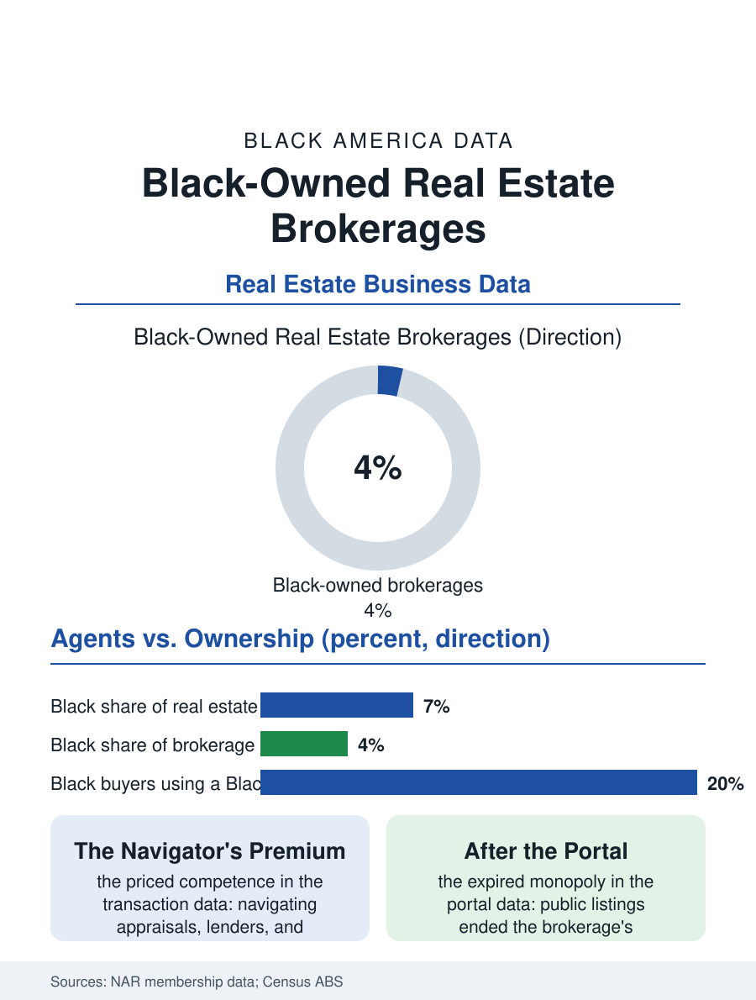

Black Business
The Gatehouse: Black-Owned Real Estate Brokerages
Black brokers navigate the housing market's documented disparities for their buyers, making the Black-owned brokerage both a business and fair housing infrastructure. The brokerage file.

The real estate brokerage is the gatehouse of the American housing market: it holds the listings, employs the agents, and takes its percentage of nearly every transaction. Black-owned brokerages operate in every major market, holding a modest share of the industry's firms, in a business whose product is trust inside transactions the housing files show are still racially patterned. This article reads the brokerage file.
Agents, Firms, and the Ownership Gap
The workforce and the ownership tell different stories, as they have throughout this atlas. Black real estate agents, licensed salespeople and brokers together, constitute roughly six or seven percent of the profession in the licensing and association data, below their population share but a substantial workforce. Brokerage ownership, the firms themselves, concentrates far more tightly: the large franchises and the big independent brands that dominate listings in most metros are overwhelmingly white-owned, and the Black-owned brokerage is typically a small independent, a handful to a few dozen agents, built on a broker's reputation in a defined geography, very often the Black neighborhoods the large firms' offices historically underserve. The franchise door stands open in principle and priced in fact, the franchise fee and the office buildout requiring the capital the business files keep tracing, while the independent route trades the brand's marketing for the broker's own name, an asset Black brokers describe in the trade literature as compounding in the community and worthless outside it, which is precisely the geography of their firms. The brokerage's economics are the split: the house's share of each agent's commission funds the office, the training, and the brand, so a brokerage's growth is a recruiting contest for productive agents, and Black brokerages recruit against the big brands' technology and lead-generation budgets with the counteroffers this atlas has catalogued in every profession: mentorship, community standing, and splits that treat the agent as a partner rather than a tenant.
The Transaction's Racial File
The brokerage does its work inside the housing market's documented disparities, and the file records the position honestly: Black agents serve as the market's translators and, at times, its shock absorbers. The appraisal gap, the lending disparities, and the steering evidence in the housing files all materialize inside transactions a broker manages, and the Black brokerage's distinctive competence, priced by its clientele, is navigating those systems for buyers they were not designed to serve, knowing which lenders work fairly with Black borrowers, how to contest a low appraisal with comparable sales, and which listings' sellers will treat their buyers' offers whole. The fair housing enforcement data add the defensive file: paired testing continues to find differential treatment of Black homeseekers by agents across the industry, which makes the Black brokerage not merely a business but a piece of fair housing infrastructure, the office where the testing would find nothing. The industry's own institutions have begun, in the recent record, to formalize support, brokerage diversity programs within the big brands, Black REALTOR associations' leadership pipelines, and mentorship pairings, though the ownership numbers move at the pace capital moves, which is the file's recurring tempo.
Technology Reprices the Gatehouse
The portals rewired the brokerage's product. When listings became public data, the brokerage's historic monopoly, access to the inventory, evaporated, and the firm's value migrated to negotiation, local knowledge, and transaction management, services whose quality is personal and reputation-priced, a migration that theoretically favors the community-rooted firm. The iBuyer and discount models pressed commissions from the other side, and the recent legal restructuring of buyer-agent compensation has repriced the brokerage's core offer again, with the early analyses suggesting the shakeout will test thinly-capitalized firms of every background while rewarding the ones whose agents demonstrably earn their fee. For Black brokerages the file's forward question is scale: the consolidators assembling regional brands need local leadership with books of business, and the acquisition route that closed the car wash file's independents is appearing in real estate, offering founders an exit and the market a question about whose name stays on the door. The brokerage file closes with the sold sign in the yard of a Black family's first house, the brokerage's name on the rider below. That sign is simultaneously an advertisement, a fair housing artifact, and the visible tip of a century-old claim, that the gatehouse of the housing market should be staffed, in part, by the people the market historically gated. The listings data will measure the claim's progress, one closing at a time.
More in Black Business
Black-Owned Businesses: Counts, Receipts, and the Representation Gap
About 161,000 Black-owned employer firms and three million solo ventures: how the Census Bureau counts Black business ownership, where firms concentrate, and the gap between population share and business share.
Black Median Net Worth: The Wealth Gap in Federal Reserve Data
The Federal Reserve puts Black median family net worth at $44,900, against $285,000 for White families — about 16 cents on the dollar. The widest gap in economic data.
Black Buying Power: The $1.8 Trillion Consumer Economy
Black buying power is estimated at about $1.8 trillion — larger than the economy of most nations. What the figure measures, who produces it, and what it buys.
Source: National Association of REALTORS membership and brokerage data; U.S. Census Bureau, Annual Business Survey (NAICS 53121).